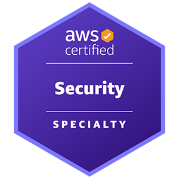
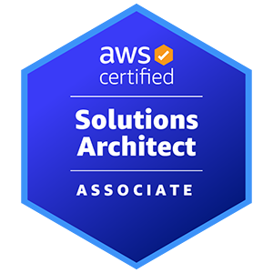
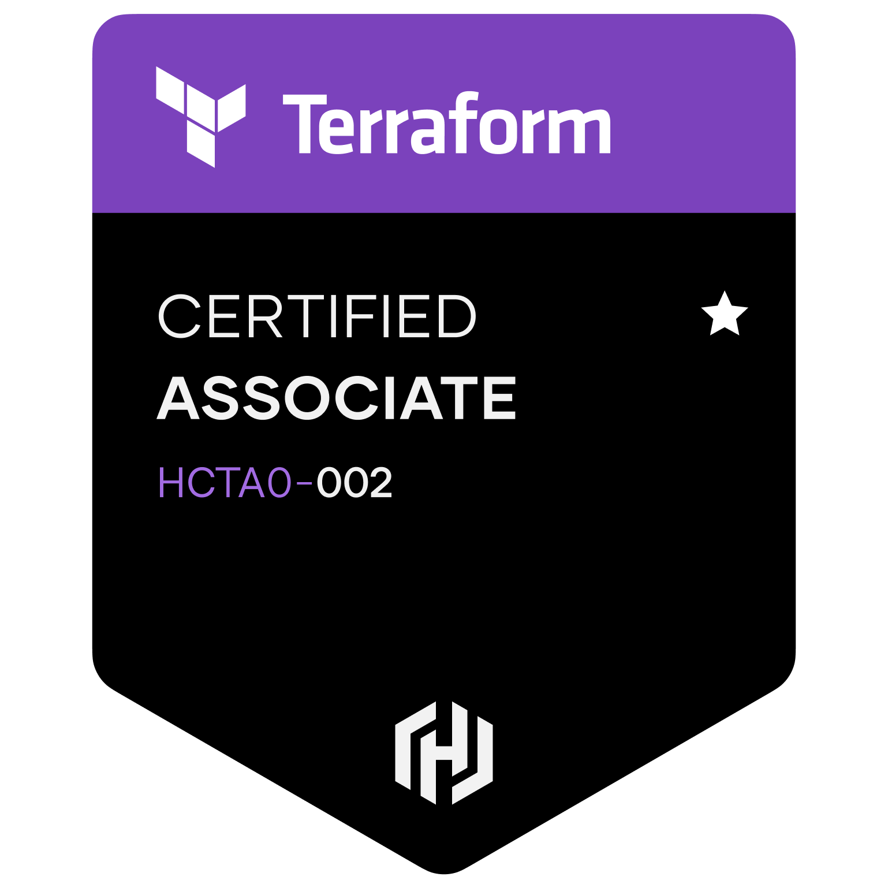

Dissertation: The privacy paradox: Managing compliance requirements while adopting new technologies in Higher Education.
Intensive program in cloud security, risk management, and vulnerability management.
Designed and deployed a highly available, secure 3-tier application environment in AWS using Terraform and Zero-Trust principles.
Collaborated on design and maintenance of AWS infrastructure for multiple clients, applying IaC for automation and cost optimization.
Completed the Cloud Resume Challenge. Built with Azure Blob Storage, Azure Functions, Cosmos DB, and automated CI/CD via GitHub Actions.


